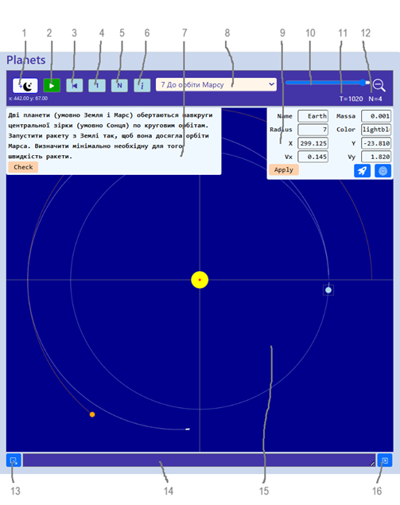

Planets – космічний конструктор
Програма відтворює сценарії, які імітують рух масивних тіл у просторі під впливом лише сили взаємного тяжіння. Створення сценарію полягає у визначенні його початкових умов, набор яких ми для короткості будемо називати сценою. Складовими сцени є планети, ракети і туманності. Всі вони мають певні властивості, такі як маса, положення, швидкість, розмір, колір, назва.

1 – кнопка додавання планет
2 – кнопка програвання або паузи
3 – кнопка відкату часу до моменту останньої зупинки
4 – вмикання-вимикання відображення траєкторій куль
5 – один такт часу
6 – кнопка довідки
7 – панель умови задачі
8 – список задач, відкритих до вирішування
9 – панель параметрів обраної планети
10 – зміна масштабу зображення
11 – годинник дискретного часу
12 – кількість небесних тіл
13 – кнопка збереження поточної сцени
14 – збережена сцена в форматі JSON
15 – модельний простір
16 – кнопка відтворення збереженої сцени
Планети додаються натисканням кнопки «+Planet»на панелі управління.
Якщо з вже існуючих планет є обрана, додається її копія. Якщо ніяка планети не є обраною, додається планета із властивостями за замовчанням.
Щоб змінити властивості щойно доданої або вже існуючої планети, треба її обрати. Після того відкриється панель планети, на якій відображуються властивості планети, доступні для змінювання.
Параметрами планети є: назва (поле Name), маса (полеMassa), радіус (поле Radius), (колір (поле Color), положення (поля X і Y), швидкість (поля Vx і Vy).
Ракета є космічним тілом малої маси і розміру. Ракета стартує з планети, отримує миттєвий імпульс під час старту і далі рухається по балістичній траєкторії без можливості її корекції. Відносно ракет діють два припущення: 1) траєкторія ракети починається з центру материнської планети, 2) тяжіння материнської планети ніяк не впливає на ракету.
Ракета завжди стартує з певної планети, тому перед додаванням ракети одна з планет має бути обраною. З тієї ж причини кнопка додавання ракети “+Rocket” знаходиться на панелі планети. Після натискання на кнопку “Rocket” з’явиться віконце з параметрами: відносна швидкість ракети (поле Velo) і затримка старту (поле Delay). Треба задати параметри і натиснути кнопку “OK”.
Стартова швидкість ракети буде сумою відносної швидкості і швидкості планети. Вважається, що відносна швидкість ракети співпадає за напрямом зі швидкістю планети, а початком траєкторії ракети є центр планети.
Старт ракети відбудеться в момент дискретного часу, який є сумою поточного моменту і затримки. Наприклад, якщо ракета створювалася, коли поточний час дорівнював 100, а затримка старту була 200, то старт відбудеться коли поточний час стане дорівнювати 100+200=300. Якщо затримка не потрібна в поле “Delay” треба занести 0 або залишити його пустим.
З планети можна запланувати старт лише однієї ракети.
Туманність створюється з обраної планети – планета зникає, а замість неї з'являється туманність. Маса планети поділяється на частки, які розташовуються в площині кола певного радіуса. Кількість і розподіл часток і радіус кола є властивостями туманності.
Розподіл часток може бути: 1) рівномірним вздовж радіусів і по куту напряму, 2) рівномірним по площі туманності. Частки отримують первинну швидкість обертання навколо центра мас туманності. Обертання запобігає надто швидкому злиттю часток під впливом тяжіння. Фактор обертання визначає, яка доля часток буде обертатися проти часової стрілки.
Додавання туманностей також потребує обрання планети, яка буде перетворена на туманність. Після натискання на кнопку “Nebula” з’явиться панель з параметрами майбутньої туманності. Треба задати параметри і натиснути кнопку “OK”. Перетворена планети на туманність відбувається із затримкою, як і старт ракети.
Параметри туманності: кількість часток (поле Count), радіус кола туманності (поле Size), фактор обертання (поле Кω), розподіл часток (поле Distr), затримка (поле Delay).
Треба обрати задачу зі списку (8), прочитати умову на панелі (7), вирішити задачу і знайти відповідь, встановити параметри сцени згідно до знайденої відповіді і натиснути кнопку Check на панелі (7). Якщо відповідь вірна, поруч з кнопкою Check з’явиться зелена галочка, якщо відповідь невірна, з’явиться червоний хрестик, і треба шукати інше рішення.
Коли в умові задачі даних недостатньо, їх можна отримати з параметрів зірок і планет. Щоб побачити параметри небесного тіла, треба обрати його за допомогою миші. Параметри обраного тіла з’являться на панелі параметрів (9), де їх можна не тільки бачити, а і змінювати. Зміни вступають в дію після натискання кнопки Apply на панелі параметрів.
При вирішенні завдань треба враховувати, що у світі моделі значення сталої тяжіння G = 1.
Задача складається з 4-х частин: назви, умови, сцени і шаблону відповіді.
Назва задачі має бути унікальною в межах застосунку.
Умова містить мету задачі і вихідні дані для її вирішення. Дані можуть бути закладені і в параметри сцени.
Сцена є json-описом об’єкта з двома властивостями: planets – масив планет і starters – масив стартерів.
Шаблон відповіді є квантифікованим логічним виразом, в який входить масив планет і поточне значення модельного часу.
Вирішення задачі полягає в тому, що користувач обчислює і встановлює початкові параметри сцени.
Перевірка відповіді полягає в тому, що запускається модельний час і динаміка сцени відстежується на протязі певного періоду часу. На кожному такті часу обчислюється логічний вираз.
Якщо виразу передує квантор існування, відповідь вважається вірною в разі, коли вираз справджується хоча б раз на протязі періоду тестування.
Якщо виразу передує квантор загальності, відповідь вважається вірною в разі, коли вираз справджується на кожному такті періоду тестування.
Вираз будується за правилами мови JS. Окрім змінних t (такт часу) і p (масив планет) у вираз можуть входити змінні з глобального контексту середовища виконання, такі як об’єкт Math.
Такти часу в тестовому періоді нумеруються з 0.
Планети в масиві p впорядковані за зменшенням маси.
Після квантору через двокрапку пишуть довжину тестового періоду. Кванторна частина відокремлюється від логічного виразу щонайменше одним пробілом.
Наприклад, в задачі обертання планети навколо зірки по круговій орбіті шаблон відповіді може бути такий
E:1 t == 0 && $(p[1].vx, 0) && $(Math.abs(p[1].vy), 5)
Тобто, якщо на початку тестового періоду (t = 0) швидкість першої планети vx приблизно дорівнює 0, а абсолютна величина швидкості vy приблизно дорівнює 5, то відповідь вважається вірною.
Знак долару у виразі означає локальну функцію приблизної рівності
const $ = (a, b, c=0.01) => Math.abs(a - b) < c;
Гнучкість шаблону відповіді дозволяє багато варіантів, наприклад,
A:100 $(Math.hypot(p[0].x - p[1].x, p[0].y - p[1].y), 400, 5)
Тобто, відповідь вірна, якщо на протязі 100 тактів часу відстань між зіркою і планетою зберігається в межах похибки, яка дорівнює 5.